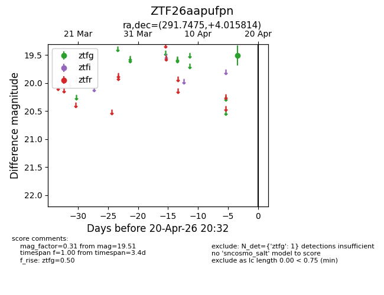
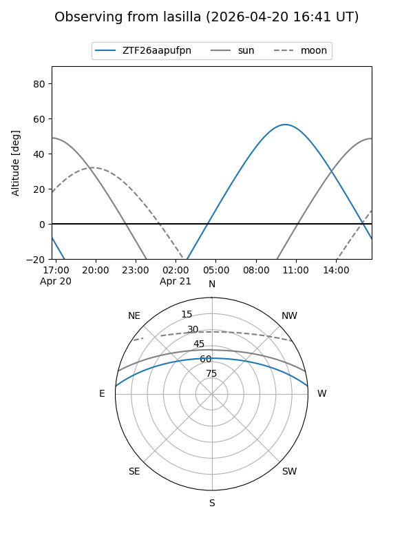
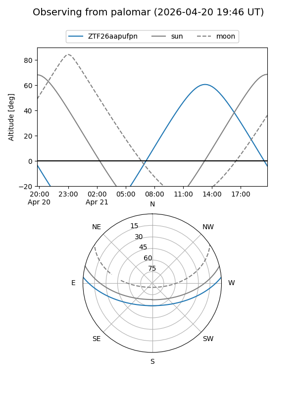

ZTF26aapufpn
Target ZTF26aapufpn at 2026-04-20 20:42
Aliases and brokers:
FINK: link
Lasair: link
ALeRCE: link
alt names
ZTF26aapufpn (ztf,fink_ztf)
Coordinates:
equatorial (ra, dec) = 291.7475,+4.01581
equatorial (HMS+DMS) = 19:26:59.41,+04:00:56.93
galactic (l, b) = (40.5949,-6.04078)
Flags:
Photometry:
last ztfg=19.51
1 ztfg detections
Lightcurve

Visibility


Additional plots